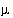

Example 4.--
Evaporation and Homogeneous Redox Reactions
Evaporation is accomplished by removing water from the chemical system. Water can be removed by three methods: (1) water can be specified as an irreversible reactant with a negative reaction coefficient in the
REACTION keyword input, (2) the solution can be mixed with pure water which is given a negative mixing fraction in
MIX, or (3) "H2O" can be specified as the alternative reaction in
EQUILIBRIUM_PHASES keyword input, in which case, water is removed or added to the aqueous phase to attain a specified saturation index for a pure phase. This example uses the first method; the
REACTION data block is used to simulate concentration of rain water by approximately 20 fold by removing 95 percent of the water. The resulting solution contains only about 0.05 kg of water. In a subsequent simulation, the
MIX keyword is used to generate a solution that has the same concentrations as the evaporated solution, but has a total of mass of water of approximately 1 kg.
The first simulation input data set (table 17) contains four keywords: (1)
TITLE is used to specify a description of the simulation to be included in the output file, (2)
SOLUTION is used to define the composition of rain water from central Oklahoma, (3)
REACTION is used to specify the amount of water, in moles, to be removed from the aqueous phase, and (4)
SAVE is used to store the result of the batch-reaction calculation as solution number 2.
Table 17.
--Input data set for example 4
TITLE Example 4a.--Rain water evaporation
SOLUTION 1 Precipitation from Central Oklahoma
units mg/L
pH 4.5 # estimated
temp 25.0
Ca .384
Mg .043
Na .141
K .036
Cl .236
C(4) .1 CO2(g) -3.5
S(6) 1.3
N(-3) .208
N(5) .237
REACTION 1
H2O -1.0
52.73 moles
SAVE solution 2
END
TITLE Example 4b.--Factor of 20 more solution
MIX
2 20.
SAVE solution 3
END
All solutions defined by
SOLUTION input are scaled to have exactly 1 kg (approximately 55.5 mol) of water, unless
-water identifier is used. To concentrate the solution by 20 fold, it is necessary to remove approximately 52.8 mol of water (55.5 x 0.95).
The second simulation uses
MIX to multiply by 20 the moles of all elements in the solution, including hydrogen and oxygen. This procedure effectively increases the total mass (or volume) of the aqueous phase, but maintains the same concentrations. For identification purposes, the solution that results from the
MIX simulation is stored as solution 3 with the
SAVE keyword. Solution 3 will have the same concentrations as solution 2 (from the previous simulation) but will have a mass of water of approximately 1 kg.
Selected results of the simulation are presented in table 18. The concentration factor of 20 is reasonable in terms of a water balance for the process of evapotranspiration in central Oklahoma (Parkhurst and others, 1996). The PHREEQC modeling assumes that evaporation and evapotranspiration have the same effect and that evapotranspiration has no effect on the ion ratios. These assumptions have not been verified and may not be correct. After evaporation, the simulated solution composition is still undersaturated with respect to calcite, dolomite, and gypsum. As expected, the mass of water decreases from 1 kg in rain water (solution 1) to approximately 0.05 kg in solution 2 after water was removed by the reaction. In general, the amount of water remaining after the reaction is approximate because water may be consumed or produced by homogeneous hydrolysis reactions, surface complexation reactions, and dissolution and precipitation of pure phases. The number of moles of chloride ( mol) was unaffected by the removal of water; however, the concentration of chloride (
mol) was unaffected by the removal of water; however, the concentration of chloride ( mol/kgw) increased because the amount of water decreased. The second mixing simulation increased the mass of water and the moles of chloride by a factor of 20. Thus, the moles of chloride increased, but the chloride concentration is the same before (solution 2) and after (solution 3) the mixing simulation because the mass of water increased proportionately.
mol/kgw) increased because the amount of water decreased. The second mixing simulation increased the mass of water and the moles of chloride by a factor of 20. Thus, the moles of chloride increased, but the chloride concentration is the same before (solution 2) and after (solution 3) the mixing simulation because the mass of water increased proportionately.
Table 18.
--Selected results for example 4
[kg, kilogram.  mol, micromole]
mol, micromole]
|
Constituent
|
Solution 1
Rain water
|
Solution 2
Concentrated
20 fold
|
Solution 3
Mixed with
factor 20
|
|
Mass of water, kg
|
1.000
|
0.05002
|
1.000
|
|
Cl,  mol
mol
|
6.657
|
6.657
|
133.1
|
|
Cl,  mol/kg water
mol/kg water
|
6.657
|
133.1
|
133.1
|
|
Nitrate [N(5)],  mol/kg water
mol/kg water
|
16.9
|
160.1
|
160.1
|
|
Dissolved nitrogen [N(0)], 
mol/kg water
|
0
|
475.1
|
475.1
|
|
Ammonium [N(-3)],  mol/kg water
mol/kg water
|
14.8
|
0
|
0
|
|
Calcite saturation index
|
-9.21
|
-9.37
|
-9.37
|
|
Dolomite saturation index
|
-19.02
|
-19.35
|
-19.35
|
|
Gypsum saturation index
|
-5.35
|
-2.91
|
-2.91
|
An important point about homogeneous redox reactions is illustrated in the results of these simulations (table 18). Batch-reaction calculations (and transport calculations) always produce aqueous equilibrium for each redox element. The rain water analysis contained data for both ammonium and nitrate, but none for dissolved nitrogen. The pe of the rain water has no effect on the distribution of species in the initial solution because the concentrations of individual redox states of all redox elements (C, N, and S) are specified. Although nitrate and ammonium should not coexist at thermodynamic equilibrium, the speciation calculation allows redox disequilibria and accepts the concentrations of the two redox states of nitrogen that are defined by the input data, regardless of thermodynamic equilibrium. During the batch-reaction (evaporation) step, redox equilibrium is attained for the aqueous phase, which causes ammonium to be oxidized and nitrate to be reduced, generating dissolved nitrogen [N
2(aq)
, or N(0) in PHREEQC notation]. The first batch-reaction solution (solution 2) contains the equilibrium distribution of nitrogen, which consists of nitrate and dissolved nitrogen, but no ammonium (table 18). The oxidation of ammonium and reduction of nitrate occur in the batch-reaction calculation to produce redox equilibrium from the inherent redox disequilibrium in the definition of the rain water composition. Nitrogen redox reactions would have occurred in the simulation even if the
REACTION keyword had specified that no water was to be removed. The only way to prevent complete equilibration of the nitrogen redox states would be to define the individual redox states as separate
SOLUTION_MASTER_SPECIES and
SOLUTION_SPECIES, for example by defining a new element in
SOLUTION_MASTER_SPECIES called "Amm" and defining NH
3
and other N(-3) species in terms of Amm (AmmH
3
, AmmH
4
+
, and others). In this case, equilibrium would be attained among all species of N and all species of Amm, but no equilibria would exist between N and Amm species.
| Next|| Previous || Top |